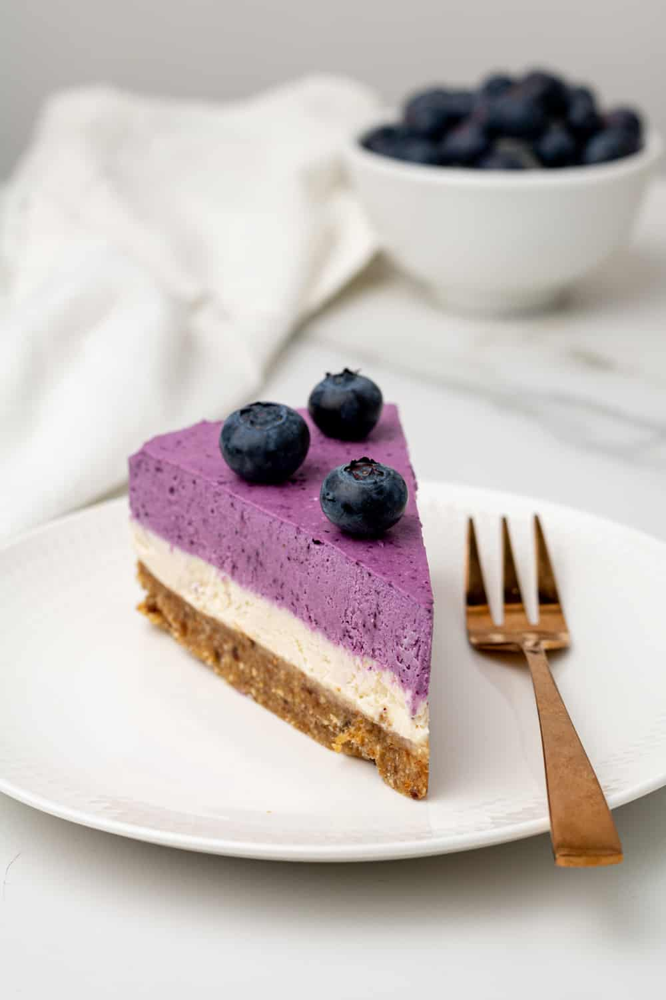

Prep Time: 30 min |
Cooling time: 4h |
Total Time: 4h30
Servings: 6 people
Calories: 565kcal
Equipment
High Speed Blender or Food processor
Ingredients
For the base:
1/2 cup raw almonds
1 cup fresh Medjool dates pitted
1/4 cup coconut oil melted
1 teaspoon vanilla extract
pinch sea salt
For the cake:
1 cup cashews
1 cup coconut milk
1/3 cup maple syrup
2 tablespoons freshly squeezed lemon juice
2 tablespoons coconut oil
1/4 teaspoon sea salt
1 teaspoon vanilla extract
1/3 cup fresh or frozen blueberries

Directions
Soak the cashews in boiling water for 30 minutes before starting to make the cheesecake.
Line a 6 inch (15 cm) springform or round cake pan with parchment paper and grease the sides with coconut oil. Set aside.
Add the almonds, cashews, pitted dates, coconut oil, vanilla extract and sea salt to a food processor and process until it comes together into a sticky "dough". There should still be small pieces of nuts visible in the mixture and it should stick together if pressed together.
Spoon the base "dough" into your prepared springform or cake pan and press the base down as even as you can. Cover and place in the freezer to set.
To make the cheesecake mixture, add all of the cheesecake ingredients (except the blueberries) to a high-speed blender and blend until the mixture is completely smooth. Reserve half the mixture for later.
Pour the other half of the mixture over the base and gently tap the cake pan around the edges to smooth out the surface. Cover and freeze for at least 2 hours to set.
Once the first layer has set, blend the reserved cheesecake mixture with the blueberries until completely smooth and purple. Pour the blueberry layer over the first layer, cover and freeze until completely set (minimum 2 hours or overnight).
To remove the cheesecake from the pan, run some hot water over a kitchen towel until it is soaked and wrap it around the pan for 30 seconds. This will melt the outside of the cheesecake and make it very easy to remove.
Slice, serve your vegan blueberry cheesecake topped with some fresh blueberries and enjoy!